Last class we explored graphical approaches to evaluating whether your data meet assumptions of linear regression. We discussed five assumptions:
We can use different graphs to test these assumptions:
| Assumption | X-Y Scatterplot | Residuals Scatterplot | Histogram of Residuals | Autocorrelation Function (ACF) |
|---|---|---|---|---|
| Normality | X | X | !! | |
| Linearity | X | X | ** | |
| Homoscedasticity | X | X | ||
| No autocorrelation | X | X | !! |
Today we are going to learn how to easily make these plots in R!
Save code and data for this lecture in your working directory:
Click here to download code.
Click on these links to download and save the data: good data, nonlinear data, nonnormal data, heteroscedastic data, and autocorrelated data.
Let’s start by examining a dataset that has no issues with it!
# Load the data
datum <- read.csv("lecture_7_good_data.csv")
# Plot the data
plot(y ~ x, data = datum)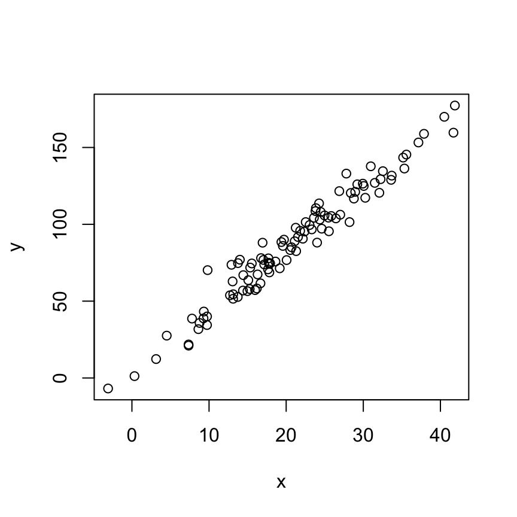
Y is continuous, definitely linear, the residuals appear normally distributed (most close to the line), variance seems constant, does not appear to have any autocorrelation (but it’s possible).
# Load the data
nonlinear <- read.csv("lecture_7_nonlinear_data.csv")
# Plot the data
plot(y ~ x, data = nonlinear)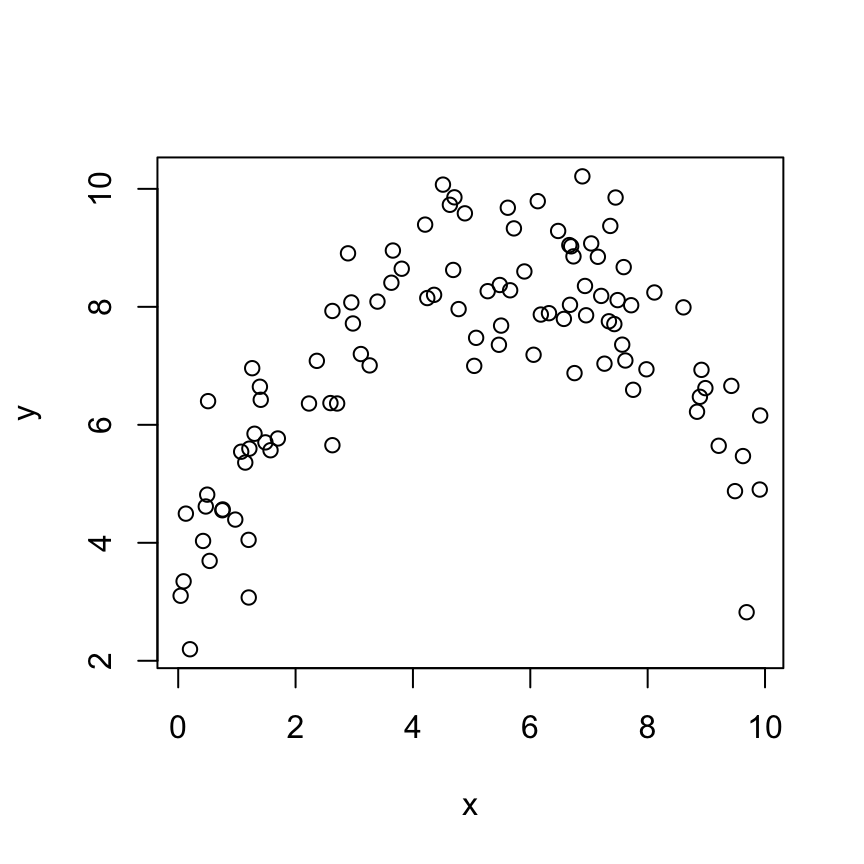
Very clearly nonlinear!
# Load the data
norm <- read.csv("lecture_7_nonnormal_data.csv")
# Plot the data
plot(y ~ x, data = norm)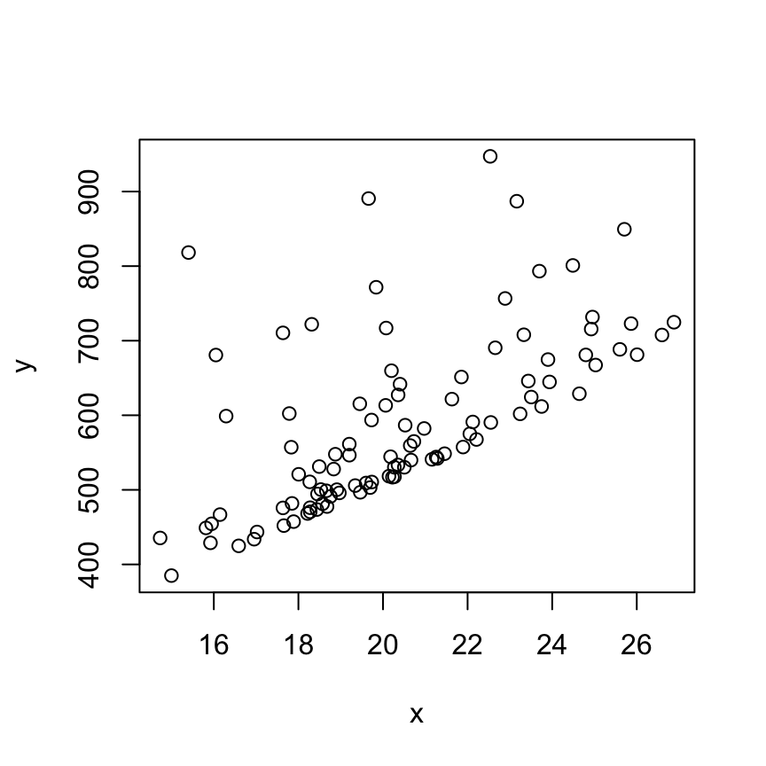
These data have a heavy tail about the line, but don’t really have any tail below the line. The residuals are likely not normally distributed.
# Load the data
hetero <- read.csv("lecture_7_heteroscedastic_data.csv")
# Plot the data
plot(y ~ x, data = hetero)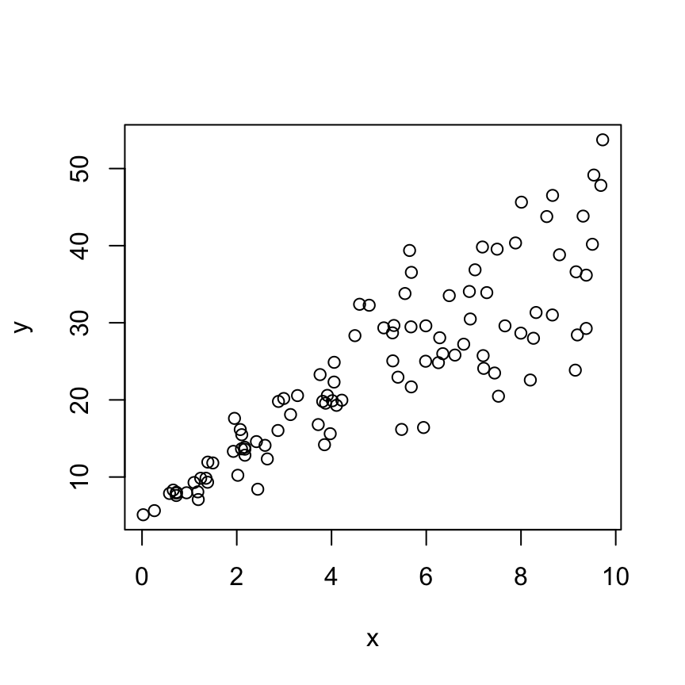
As the X-variable increases, noise/error in Y increases. This is clearly heteroscedastic.
# Load the data
auto <- read.csv("lecture_7_autocorrelated_data.csv")
# Plot the data
plot(y ~ x, data = auto)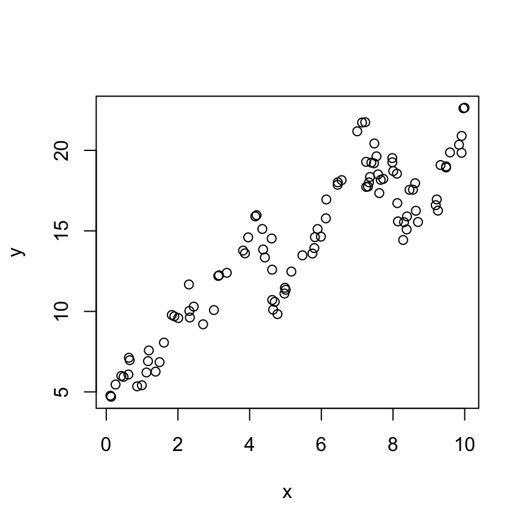
Pretty easy to see the autocorrelation in these data. Most observations of Y at X are similar to the observation of Y at X-1. The data follow eachother! But, if autocorrelation isn’t strong, it can be difficult to see.
Before we can run a residual plots, we have to generate the residuals! Which means we have to first fit a regression. X-Y Scatterplots use the raw data, but the other three graphs we use require a regression to be run for us to then make these plots. Let’s run a few analyses:
# Fit linear regression models to the five datasets
results <- lm(y ~ x, data = datum)
resultsNonlinear <- lm(y ~ x, data = nonlinear)
resultsNorm <- lm(y ~ x, data = norm)
resultsHetero <- lm(y ~ x, data = hetero)
resultsAuto <- lm(y ~ x, data = auto)I’m not going to look up the summaries for each of the models. We could use these to look at summaries and maybe infer how much violations influence slopes, p-values, etc. It’s tricky to compare these different datasets because I simulated them all using different slopes, intercepts, etc. So we can’t quite compare them directly. However, we have already talked about those ‘rules of thumb’ and instead we should just keep them in mind.
The code to extract residuals is called ‘residuals()’. This tells us the distance from each point in our dataset to the line of best fit identified by the regression analysis. E.g.,
# Examine the residuals (just the first ~20)
residuals(results)[1:20]## 1 2 3 4 5 6
## -5.0961006 2.7808718 -0.4968071 -1.9283188 -6.7362526 1.1821405
## 7 8 9 10 11 12
## -5.2633312 -13.0521495 -2.5077100 7.9873205 -3.2665149 5.8371791
## 13 14 15 16 17 18
## -11.9524042 0.4243903 4.7443550 3.9817491 1.8768181 -5.1287563
## 19 20
## -5.6808001 -7.5690709These data are used to calculate the standard deviation of the error around our line – simply by calculating the standard deviation of these data. The mean of these data should be ~ 0.
But we want to examine these residuals graphically. It may be tempting to plot these residuals very simply using:
# Simple way
plot(residuals(results))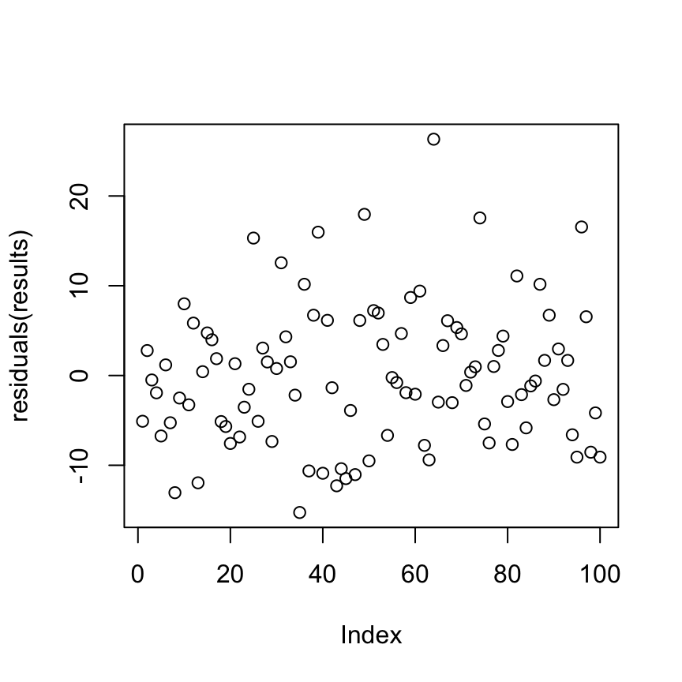
However, note that the X-axis title is “Index”. This means that the X-values here are in the order of the data, from 1 to n – the sample size. We actually want to make sure that the X-axis in this plot is our actual X-variable, so we can look at how residuals change along the continuous nature of our X-variable.
We are drawing the residuals from the ‘results’ object, so we can’t reference the ‘datum’ object like we usually do. Instead we have to explicitly call the raw X-variable data. We can call an individual variable from an object in R using the money sign command: ‘datum$x’‘. We can call’. E.g.,
# Correct way to examine residuals plot
plot(residuals(results) ~ datum$x)
# Add a horizontal line at y = 0
abline(a = 0, b = 0)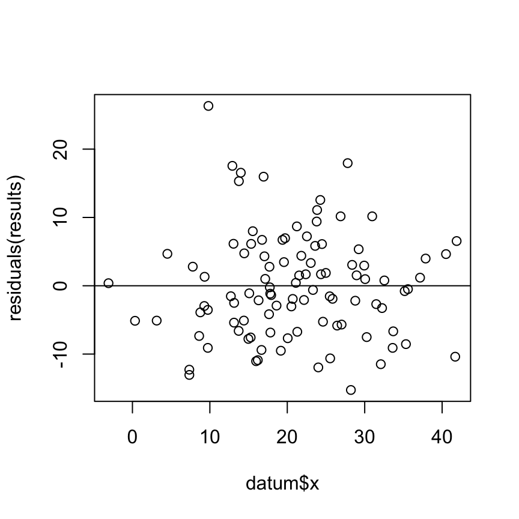
So what have we done…? We have taken our scatterplot of data and:
We can see that (1) most of our residual points are close to the line, few are far away, (2) there’s no heteroscedasticity, (3) doesn’t appear to be any autocorrelation, and things appear linear.
Let’s examine this for nonlinear data:
# Correct way to examine residuals plot
plot(residuals(resultsNonlinear) ~ nonlinear$x)
# Add a horizontal line at y = 0
abline(a = 0, b = 0)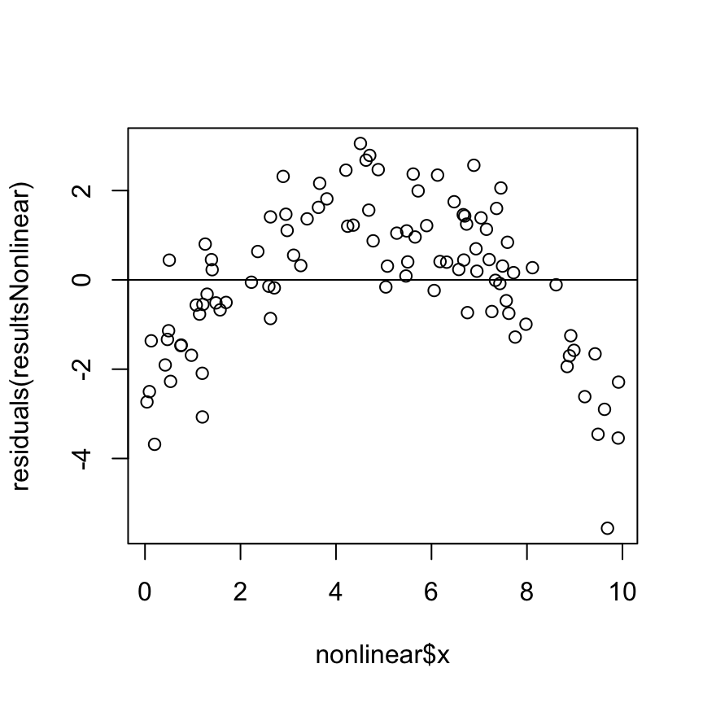
Clearly this is nonlinear: bunch of points below the line, then a bunch above, and then more below. This would be much better fit with a curvilinear line, which we will discuss in a couple weeks.
Non-normal data:
# Correct way to examine residuals plot
plot(residuals(resultsNorm) ~ norm$x)
# Add a horizontal line at y = 0
abline(a = 0, b = 0)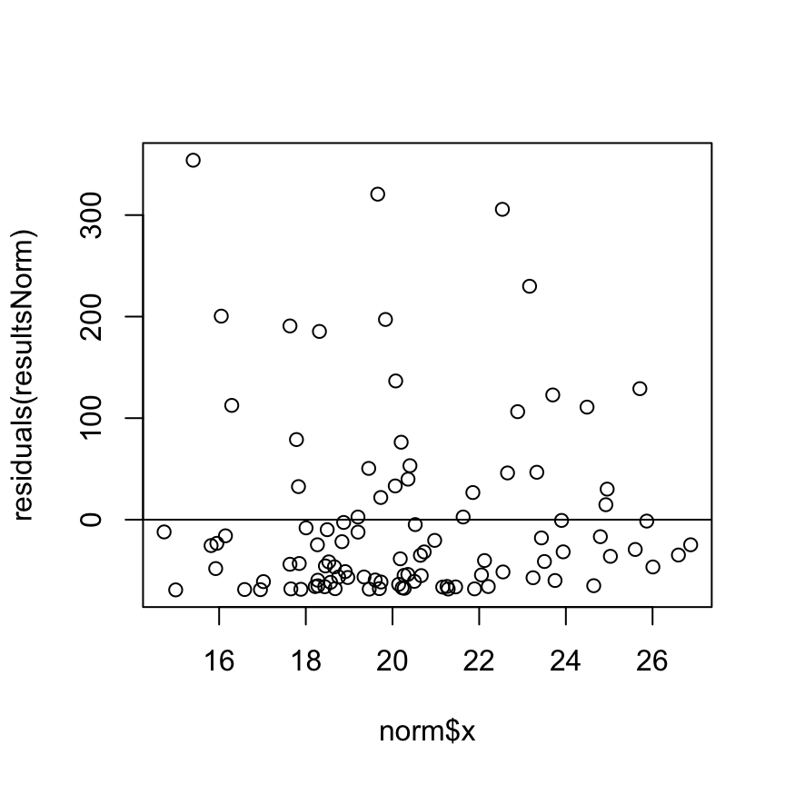
Notice where the regression line is! It’s way down at the bottom of the graph, rather than being in the middle. This is a red flag. And then most of the noise is above the line. This suggests non-normality.
# Correct way to examine residuals plot
plot(residuals(resultsHetero) ~ hetero$x)
# Add a horizontal line at y = 0
abline(a = 0, b = 0)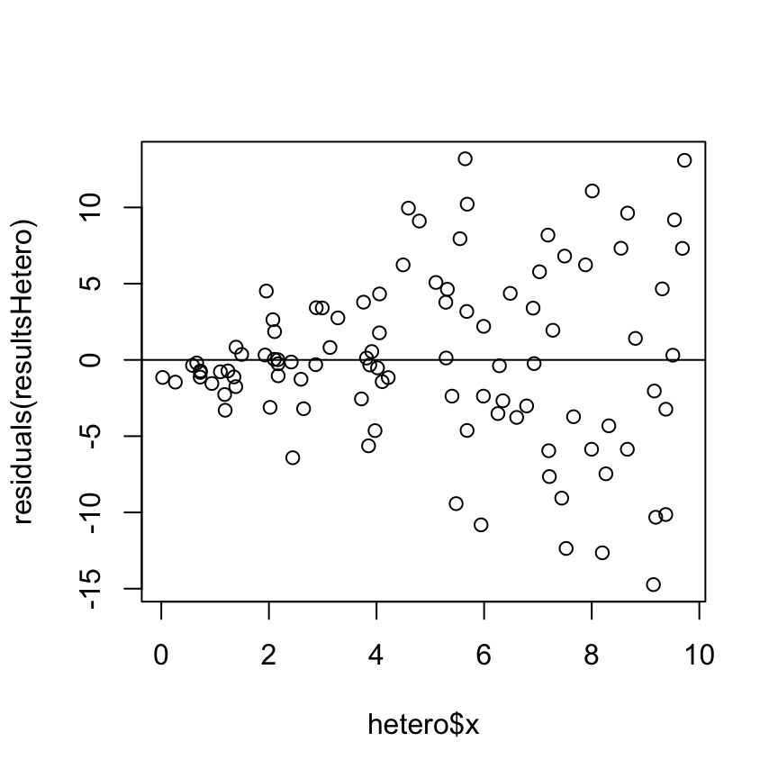
Pretty easy to see the heteroscedasticity: small variance with small X-values, and then larger variance with larger X-values.
# Correct way to examine residuals plot
plot(residuals(resultsAuto) ~ auto$x)
# Add a horizontal line at y = 0
abline(a = 0, b = 0)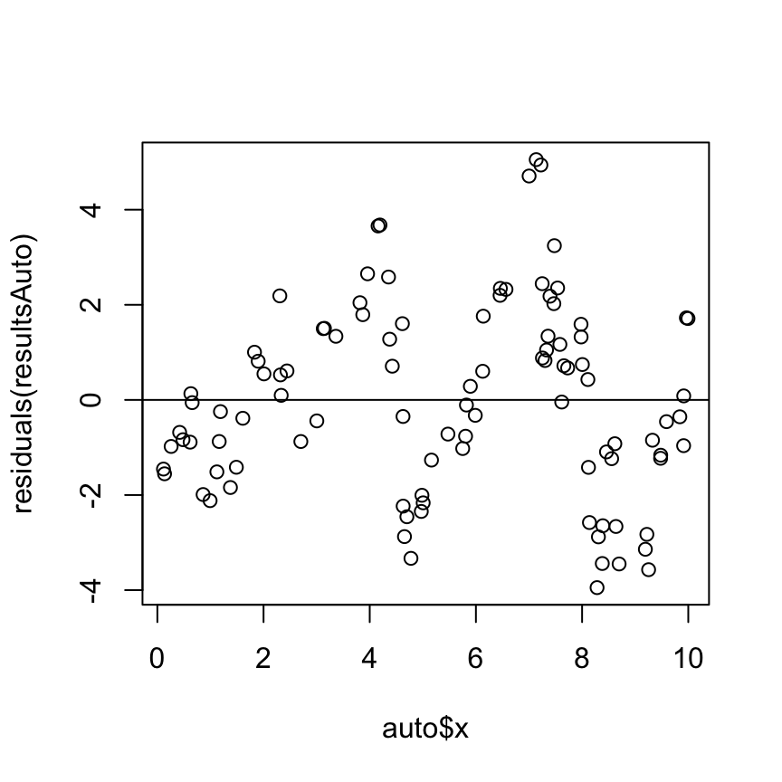
The points (residual error) are following each other! This path is a good indication of autocorrelation. The data are not independent of one another.
The histogram of residuals will make a simple bar chart that examines ‘global’ normality across all of your data. What I mean by ‘global’ is that it does examine normality as the X-variable increases, but lumps all the error across all X-values into a single chart.
# Correct way to examine residuals plot
hist(residuals(results))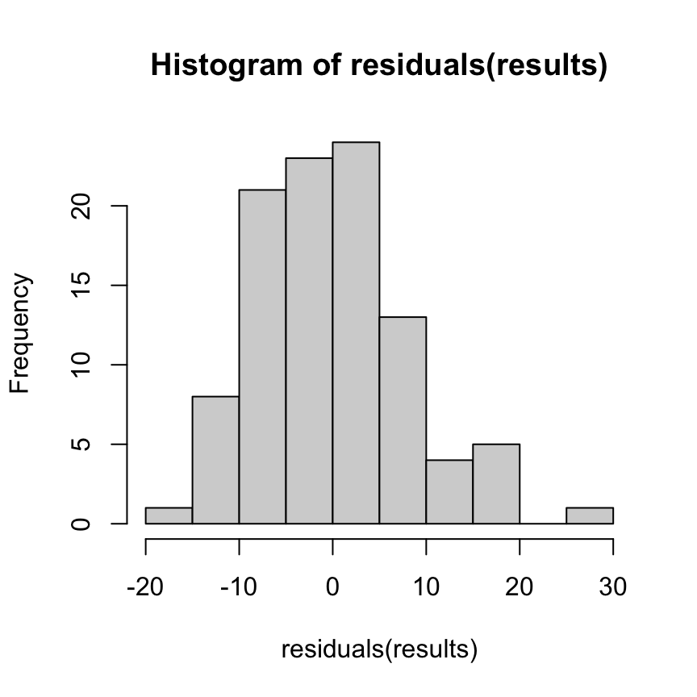
We have taken all of the residuals and examined the distribution of residuals across all the X-values.
Q: Can anyone think of a negative consequence of lumping in this histogram? Can you think of another assumption that we can we no longer test for with this graph?
Q: Does this look perfectly normal?
Nah, not really. It never will. But what we are looking for is obvious, egregious violations of the assumption of normal error. For example, let’s make this graph for the non-normal data:
# Correct way to examine residuals plot
hist(residuals(resultsNorm))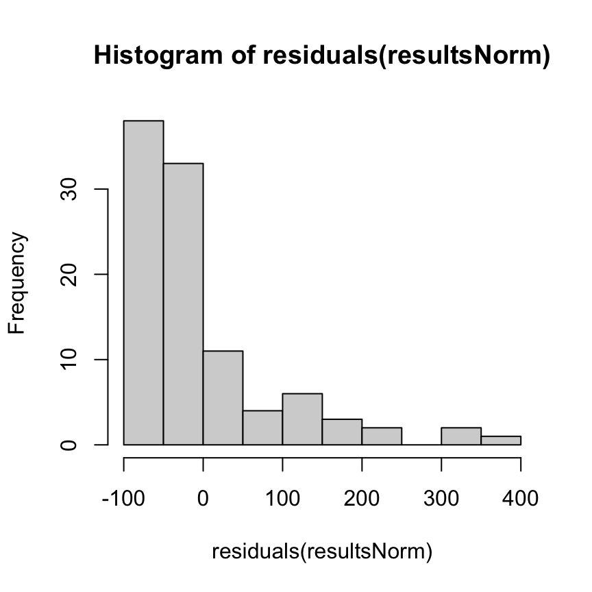
This is pretty bad! This is a case where we would say “Our data are not normal!”
This might be a time where you would use a ‘log transformation’ to fix this issue. I don’t really like log-transformations because it screws with how we interpret our results – makes the story less clear – but that would be an option here.
Let’s examine the heteroscedastic data:
# Correct way to examine residuals plot
hist(residuals(resultsHetero))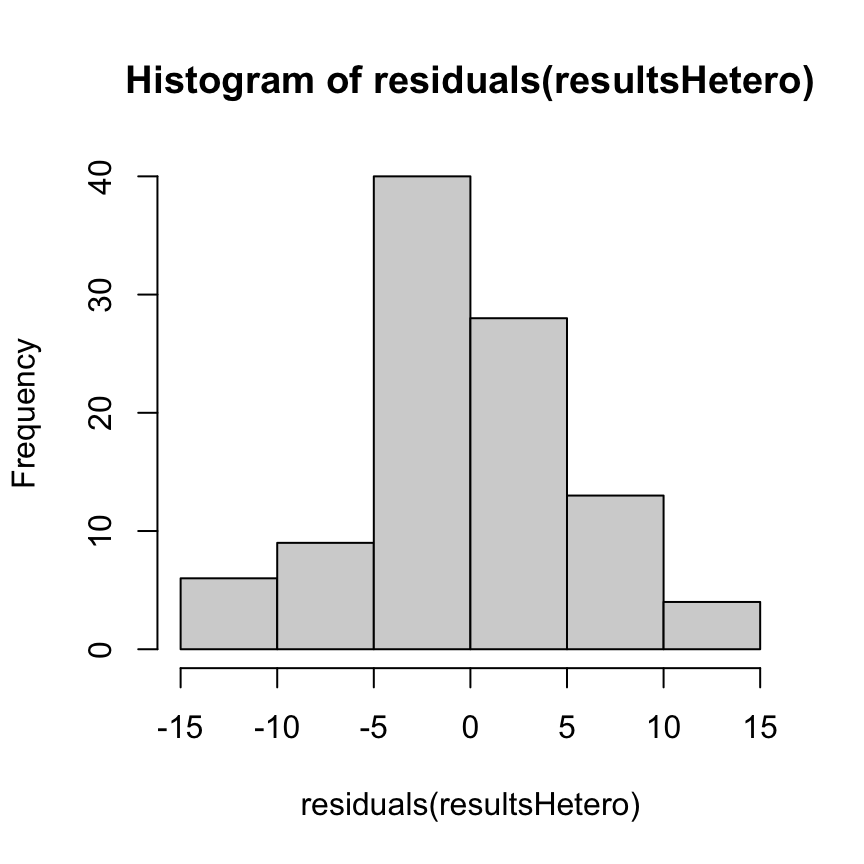
Q: Does anything seem off about these data? (Kind of hard to say.)
If you don’t like the appearance of your histogram and want to adjust it, you can change the appearance of it using the ‘breaks’ command:
# Make two graphs side-by-side
par(mfrow = c(1, 2))
# Default setting
hist(residuals(resultsHetero))
# Revisualizing with more breaks
hist(residuals(resultsHetero), breaks = 10)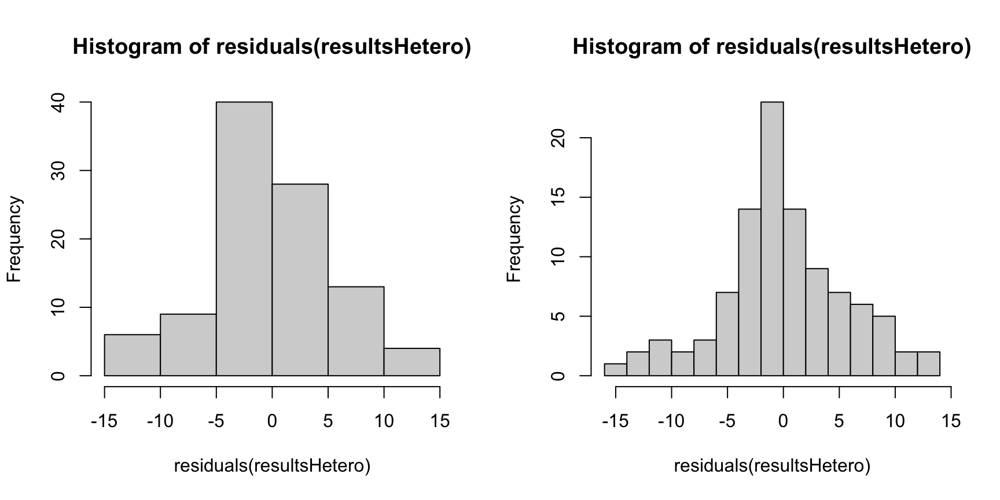
This second graph suggests that the bell curve might be a bit ‘skinny’ – which is called kurtosis. Kurosis is when the shape of your distribution is not-normal. It may have skew in one direction (a tail), more observations in the middle (bulge), or be ‘skinny’ and have longer tails on both sides. This is a rare problem for you to have to deal with, but you can do ‘weighted regression’ in ‘lm()’ to account for uneven variance in the model itself.
The autocorrelation function measures how similar each datapoint is to the other datapoints that are behind it in the dataframe. It compares residuals at different lags in the dataframe.
# Autocorrelation function for normal data
acf(residuals(results)[order(datum$x)])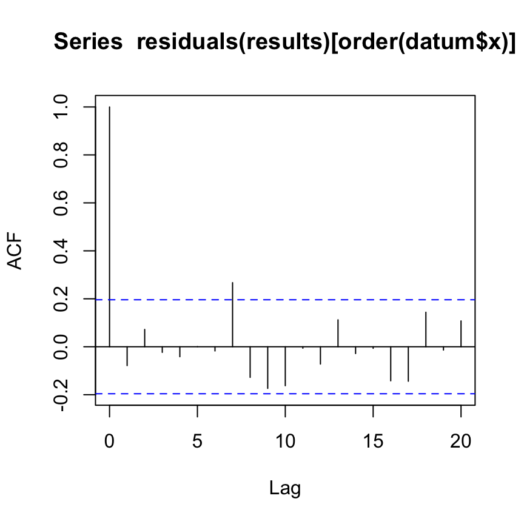
When we run this, we have to make sure our ACF function operates using the order of the X-variable. This might reflect the biological mechanism with which we might expect autocorrelation to happen. For example, if we were measuring how a powerplant causes pollution in a river, we would order our data using the X-variable ‘distance from plant’. So we will index the ACF using the ‘order’ of the X-variable.
Let’s examine the ACF graph a bit more. On the X-axis, we have a ‘lag’ in comparing the residuals in our data.
What does obvious autocorrelation look like…?
# Autocorrelation function for normal data
acf(residuals(resultsAuto)[order(auto$x)])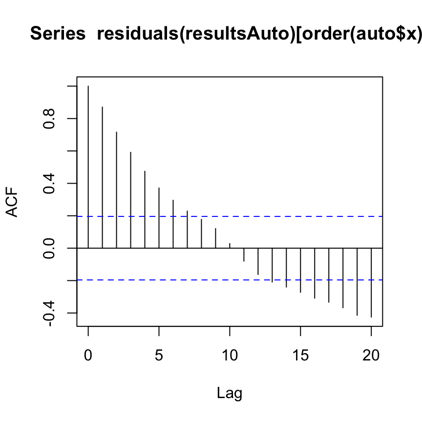
This is obvious autocorrelation. We see that each point is highly correlated with the value next to it! E.g., \(r^2\) values are high: greater than 0.8! It isn’t until a lag of ~8 that we see the ACF values dip below the blue line. And then eventually the have negative autocorrelation at a lag of 15 and beyond.
This chart is best for testing for autocorrelation. But, I mentioned last class, that sometimes these charts can indicate autocorrelation when data are nonlinear:
# Two graphs
par(mfrow=c(1,2))
# Recall the scatterplot for the nonlinear data
plot(y ~ x, data = nonlinear)
# Autocorrelation function with correct order
acf(residuals(resultsNonlinear)[order(nonlinear$x)])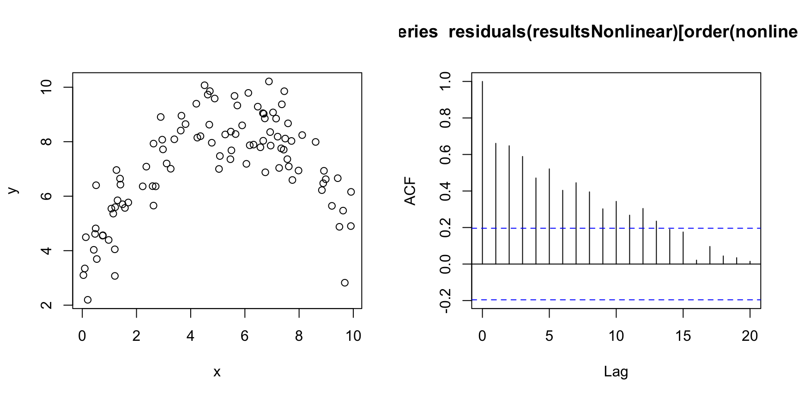
Remember, the autocorrelation function is comparing residuals. Is one residual similar to the residuals next to it?
Since a linear model was fit through these data, we have clusters of negative and positive residuals, and the ACF will pick up on this autocorrelation. However, this observed autocorrelation is not due to true autocorrelation in the system, but rather our use of linear model being fit to nonlinear data. Our line doesn’t fit well! And here, the ACF is telling us that we should double-check whether our data are linear.
If a nonlinear line was fit through these data, the residuals would be normal and the ACF would not detect autocorrelation. We may learn how to do this in a few weeks.
I use these graphs to test the assumptions of linear regression model. You do have to run the regression first! It’s part of your exploratory process. You should think about whether your data are linear or not before starting an analysis. I may make a ‘field guide’ for considerations when running an analysis, and/or maybe we will work on that together during the last class.
Code to simulate the above datasets is included here:
### Code for simulating data to be analyzed in this lecture
# Set the seed for reproducibility
set.seed(123)
## Simulate data with no assumption violations
n <- 100
x1 <- rnorm(n, mean = 20, sd = 10)
y1 <- 5 + 4 * x1 + rnorm(n, mean = 0, sd = 8)
# Create dataframe
datum <- data.frame(x = x1, y = y1)
# Save the CSV file
write.csv(datum, "lecture_7_good_data.csv")
## Simulate data with a violation of normality
n <- 100
x <- rnorm(n, mean = 20, sd = 3)
y <- 10 + 25 * x + rnorm(n, mean = 0, sd = 8)^2
# Create dataframe
datum <- data.frame(x = x, y = y)
# Save the CSV file
write.csv(datum, "lecture_7_nonnormal_data.csv")
## Simulate data with a violation of linearity
n <- 100
x <- runif(n, 0, 10)
#x <- sort(x)
y <- 3 + 2 * x - 0.18 * x^2 + rnorm(n, mean = 0, sd = 1)
# Create dataframe
datum <- data.frame(x = x, y = y)
# Save the CSV file
write.csv(datum, "lecture_7_nonlinear_data.csv")
## Simulate data that are heteroscedastic
n <- 100
x1 <- runif(n, 0, 10)
y1 <- 5 + 4 * x1 + rnorm(n, mean = 0, sd = 1 * x1)
# Create dataframe
datum <- data.frame(x = x1, y = y1)
# Save the CSV file
write.csv(datum, "lecture_7_heteroscedastic_data.csv")
## Simulate data that are autocorrelated
n <- 100
x1 <- runif(n, 0, 10)
# Sort x1 from low to high
x1 <- sort(x1)
# Simulate error for each value using the mean of the previous value
error <- matrix(NA, length(x1), 1)
error[1,1] <- rnorm(1, mean = 0, sd = 1)
for (i in 2:length(x1)){
error[i,1] <- rnorm(1, mean = error[i-1, 1], sd = 1)
}
# Create y values
y1 <- 3 + 2 * x1 + error
# Create dataframe
datum <- data.frame(x = x1, error = error, y = y1)
# Save the CSV file
write.csv(datum, "lecture_7_autocorrelated_data.csv")Using our statistical models (i.e., our statistical analyses) to make predictions is a really important component of science. Perhaps the ultimate goal. We are seeking to understand nature and make predictive models for how it works! If you can’t make predictions from your statistical model, then we might argue that your model needs some work.
Quality of science
For me personally, I am a conservation biologist who studies wildlife populations. I try to measure the demographic rates of populations: what are the survival and reproductive rate of turtles in a population each year, and how does survival and reproduction vary by age? I then try to use those models for age-structured demographic rates to make predictions about how populations will grow or decline in size. This is often called ‘population viability analysis’. My ultimate goal is to generate models for whether populations will persist or not.
Ultimately, prediction comes back to our linear model:
\(Y = \beta_0 + \beta_1 X_1 + \epsilon \sim N(0, \sigma)\)
To make predictions, we can:
For example, let’s say we have results from a regression model explaining how biomass (kg/ha) changes as a consequence of rainfall (cm). Our results are:
We would predict to observe 11.80 kg/ha biomass when an area gets 5 cm of rain.
Let’s examine the biomass example with a scatterplot:
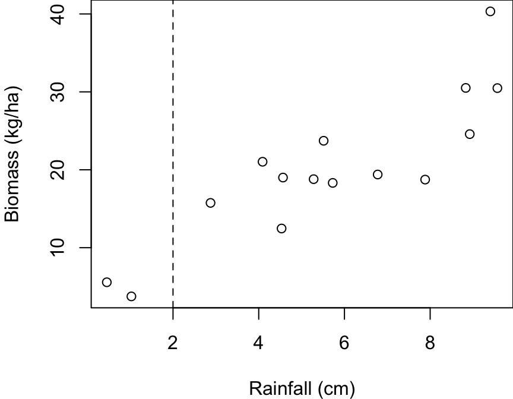
We don’t have any data around when rainfall ~ 2 cm. Let’s say you want to know how much biomass you might expect at the vertical dashed line – 2 cm rainfall. Can we do that? Yes!
Interpolation (good) – making predictions within the range of observed data.
Let’s say you want to know how much biomass you might expect when there is 15 cm of rainfall. Can we do that? Yes.
Extrapolation (be careful) – making predictions outside the range of observed data.
Anytime we provide an estimate of truth with out statistical model, we provide a measure of uncertainty. If we estimate a slope, difference between groups, whatever – we always provide estimates of confidence intervals. We always convey how certain we are of those estimates.
We must do the same for predictions.
In the rainfall prediction example above, we aren’t going to provide confidence intervals, but will instead provide prediction intervals.
Confidence intervals – 95% of all such intervals contain the true value; a measure of uncertainty in the estimate.
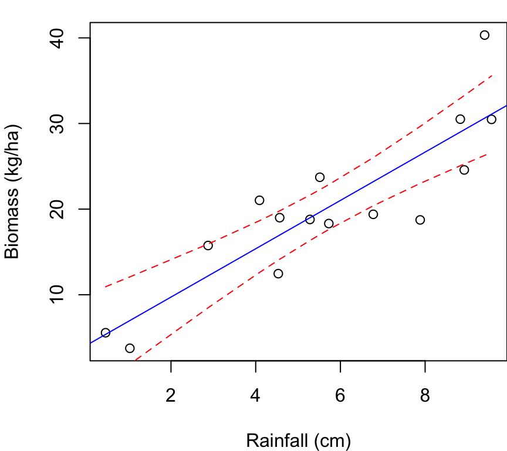
Prediction intervals – a measure of uncertainty in the individual outcomes
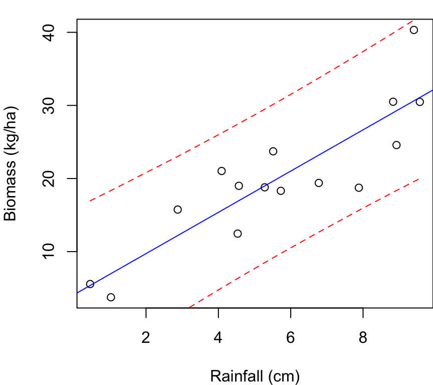
A prediction interval will capture most (95%) of the data.
Q: What do you notice about the shape of how I drew the confidence intervals and aprediction intervals?
They are somewhat pinched in the middle. This is because we have more data in the middle, we gives us more certainty about in what the true estimate is and individual outcomes are.
However, at the tails we have less data, and thus we have less certainty about the estimate and individual outcomes. And if we extrapolate, the uncertainty will be larger.
We will work on how to make predictions and predictions intervals in R during the next class.